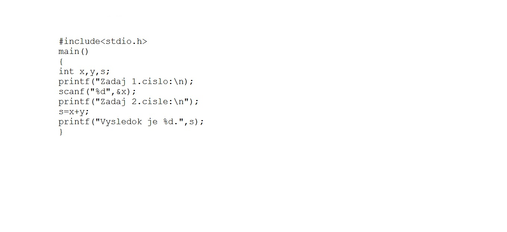
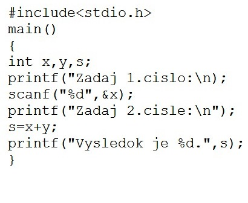

Algoritmizácia, programovanie
Algoritmus a jeho vlastnosti, program, vývojový diagram, ladiaca tabuľka, ..
Algoritmus - presný postup ktorý vedie k vykonania určitej činnosti, je to postup elementárnych príkazov ktorých realizáciou zo vstupných údajov po konečnom počte činností získame výsledkyVlastnosti – požiadavky na algoritmus:
ELEMENTARNOSŤ – postup je zložený z jednoduchých krokov, ktoré sú pre vykonávateľa (počítač, nemysliace zariadenie, človeka) zrozumiteľné,
DETERMINOVANOSŤ – postup je zostavený tak, že v každom momente jeho vykonávania je jednoznačne určené, aká činnosť má nasledovať, alebo či sa už postup skončil,
REZULTATÍVNOSŤ – výpočet dáva po konečnom počte krokov výsledok
KONEČNOSŤ – výpočet (činnosť vykonávaná podľa algoritmu) vždy skončí po vykonaní konečného počtu krokov
HROMADNOSŤ – algoritmus je použiteľný na celú triedu prípustných vstupných údajov
EFEKTÍVNOSŤ – výpočet sa uskutočňuje v čo najkratšom čase a s využitím čo najmenšieho množstva prostriedkov (časových i pamäťových).
Program - algoritmus zapísaný v programovacom jazyku.
Vývojový diagram - postupnosť činností popisovaná prostredníctvom grafických značiek a textu v nich, pričom tok výpočtu je znázornený šípkami.
Ladiaca tabuľka - testuje funkčnosť algoritmu po krokoch
Riešenie problemu...
Algoritmus na výpočet súčtu dvoch čísel:Vývojový diagram:

Program:
Programovací jazyk C
Štruktúra jazyka C:Skupina hlavičkových súborov štandardných funkcií.
Definície užívateľských funkcií.
Deklarácie globálnych premenných.
Funkcia main.
Ostatné užívateľské funkcie.
Matematické funkcie
Ak sú v programe použité mat.funkcie je potrebne zapísať hlavičkový súbor "math.h"- abs(x) - absolutna hodnota celeho čísla
- fabs(x) - abs.hodnota čísla s desatinou čiarkou
- sqrt(x)- druhá odmocnina
- pow(x,y)- mocnica x na y
- log(x) - pripodzený logaritmus
- log10(x)- logaritmus so zakladom 10
- exp(x)- exponencialna funkcia
- sin(x)- sínus
- cos(x) -kosínus
- tan(x) - tangens
- round(x)- zaokruhlenie
- ceil(x) - vráti najbližšie celé číslo(zaokruhli nahor)
- floor(x) - zaokruhli nadol
Dáta v programovacom jazyku
Identifikátor je postupnosť písmen a číslic (a niektorých špeciálnych znakov, napr. '_'), ktorá sa začína písmenom, resp znakom '_'.Premenná môže obsahovať:
- základný preddefinovaný typ (char, int, float, double)
- odvodený typ (smerník, pole, struct, union)
- vymenovaný typ (enum)
- užívateľom definovaný typ (typedef)
- prázdny typ (void)
Výrazy, operátory
Výraz je predpis obsahujúci konštanty, premenné a spôsob ich spracovania pomocou operácií a funkcií podobných tým, ktoré poznáme z matematiky. Výsledkom je hodnota príslušného typu, ktorá vznikne po vykonaní vo výraze naznačeného spracovania. napr. obsah=a*b, obsah=pí*r*rAk zapíšeme v matematike napríklad a+b, hovoríme o výraze. Ten má dva operandy a a b a jeden operátor + .
Delenie operátorov:
Operátory rozdeľujeme podľa počtu operandov (arity) na operátory unárne, binárne a ternálne. Binárne operátory sú aritmetické, relačné, logické, bitové a operátory priradenia a posunu. Aritmetické operátory sú aditívne a multiplikatívne. Operátory majú svoju prioritu a asociativitu. Priorita určuje, že napríklad násobenie sa vyhodnotí skôr, než napríklad sčítanie. Asociativita hovorí, či sa vyhodnocuje výraz zľava doprava, alebo naopak.
Príkazy priradenia, vstupy, výstupy
Príkazy:vety jazyka prikazujúce procesoru vykonať presne stanovené činnosti. (vstupu, výstup a priradenie). Musia spracúvať iné objekty: premenné, konštanty a výrazy.Jednoduché
Zložené: pozostávajú zo sekvencie príkazov, oddeľujeme ich bodkočiarko
Priradenie: priradenie hodnoty výrazu na pravej strane do premennej na ľavej strane; typ premennej a výrazu musia byť kompatibilné - znak priradenia : =
Vstup:tvar vstup(a1,..,an) – zo vstupného zariadenia sa prečíta n hodnôt a postupne sa priradia premenným a1,..,an.
Výstup:tvar výstup(b1,..,bn) – vytlačia sa výstupné údaje b1,..,b
Vetvenie programov
Vetvenie je v algoritmizácii reprezentované podmienkou, ktorá predstavuje možnosť rozhodnúť sa podľa pravdivosti skúmaného znaku. V závislosti od jej splnenia sa postup vetví na rôzne prípady. Ak je podmienka splnená, pokračuje sa vykonávaním vetvy označenej ako „+“ , v opačnom prípade sa spracúvajú príkazy vo vetve „-“.Práca so súbormi
Podstatným rozdielom pri práci so súbormi je použitie identifikátora súboru typu int (tzv. manipulačné číslo) namiesto FILE *, pomocou ktorého pracujeme so súborom v jednotlivých štandardných funkciách.Pre otvorenie súboru:
int open(char *name,int mode);
kde name - meno súboru
mode - prístup k súboru (čítanie, zápis, oboje)
(podrobne viď popis knižnice jazyka)
Pre zatvorenie súboru:
int close(int handle);
Čítanie a zápis do súboru: int read(int handle,char *buffer,int size);
int write(int handle,char *buffer,int size);
kde handle identifikátor súboru
buffer názov bufra
size dĺžka bufra
Vetvenie programov
Vetvenie je v algoritmizácii reprezentované podmienkou, ktorá predstavuje možnosť rozhodnúť sa podľa pravdivosti skúmaného znaku. V závislosti od jej splnenia sa postup vetví na rôzne prípady. Ak je podmienka splnená, pokračuje sa vykonávaním vetvy označenej ako „+“ , v opačnom prípade sa spracúvajú príkazy vo vetve „-“. Vo všeobecnosti možno vetvenie zapísať ako na obrázku.Cykly
Cyklus nám poskytuje prostriedok umožňujúci opakovať činnosť alebo činnosti. Pri jeho použití je potrebné vedieť, čo sa má opakovať a dokedy sa to má opakovať. Činnosť, ktorá sa opakuje, označujeme ako telo cyklu, podmienku, ktorá určuje dokedy sa bude telo cyklu opakovať, nazývame podmienka cyklu. V závislosti od vzťahu medzi telom a podmienkou cyklu môžeme cykly rozdeliť na: • cyklus so známym počtom opakovaní, • cyklus s podmienkou na začiatku, • cyklus s podmienkou na konSO ZNÁMYM POČTOM OPAKOVANÍ
Predpokladom využitia takéhoto cyklu je, že počet opakovaní sa dá vyjadriť pred jeho odštartovaním a operácie v tele naň nemajú žiaden vplyv. Vo všeobecnosti ho možno zapísať ako na obrázku.S PODMIENKOU NA ZAČIATKU
Tento typ cyklu má podmienku, ktorá sa stará o ukončenie cyklu, umiestnenú pred telom. Ak je podmienka splnená, vykoná sa telo cyklu a opäť sa otestuje. Ak „vstupná“ podmienka nie je splnená už pri prvom vstupe do cyklu, nemusí sa tento vykonať vôbec. Graficky vyzerá zápis ako na obrázku.S PODMIENKOU NA KONCI
Tento cyklus na prvý pohľad vyzerá oproti cyklu s podmienkou na začiatku ako opačný – najprv sa vykoná telo cyklu a až potom sa zisťuje splnenie podmienky. Ak je podmienka cyklu splnená, vykonávanie cyklu sa ukončí, v opačnom prípade sa pokračuje opätovným vykonávaním tela cyklu. Dôsledkom takéhoto riadenia je, že cyklus vždy prebehne minimálne raCYKLUS SO ZNÁMYM POČTOM OPAKOVANÍ (for)
Predpokladom využitia takéhoto cyklu je, že počet opakovaní sa dá vyjadriť pred jeho odštartovaním a operácie v tele naň nemajú žiaden vplyv. Cyklus so známym počtom opakovaní používa premennú, hovorí sa jej riadiaca premenná, ktorá si „pamätá“ koľkokrát cyklus prebehol. Po skončení tela cyklu sa automaticky (ma to na starosti cyklus, nie my) pripočíta hodnota 1 a skočí sa na začiatok cyklCYKLUS WHILE
Najskôr sa vyhodnotí podmienka. Ak je splnená - výraz má hodnotu true, vykoná sa príkaz za do. Ak je false telo sa nevykoná.Tento proces sa opakuje dovtedy, kým podmienka nenadobudne hodnotu FALSE. Teda cyklus sa ukončí vtedy, keď podmienka prvýkrát nadobudne hodnotu FALSE.test sa robí pred vykonaním daného tela cyklu, a ak podmienka nie je splnená, cyklus sa ukončí. Telo cyklu sa v tomto prípade nevykoná ani raCYKLUS WHILE-DO
Tento typ cyklu má podmienku, ktorá sa stará o ukončenie cyklu, umiestnenú pred telom. Ak je podmienka splnená, vykoná sa telo cyklu a opäť sa otestuje. Ak „vstupná“ podmienka nie je splnená už pri prvom vstupe do cyklu, nemusí sa tento vykonať vôbeÚdajový typ- pole
Pre spracovanie väčšieho počtu údajov rovnakého typu. Ako údajová štruktúra sa v takomto prípade používa typ pole – array. Možno si ho predstaviť ako zoznam, ktorý obsahuje hodnoty rovnakého typu. Tieto sú jednoznačne určené indexom, z ktorého sa dá určiť ich umiestnenie v zozname. S poľom sme sa stretli už v prípade údajového typu string, ktorý vlastne predstavuje pole znakov (pole údajov typu char). Pred použitím poľa treba najprv kompilátoru túto požiadavku oznámiť. Môžeme to urobiť dvoma spôsobmi – pri deklarácii premennej alebo definíciou nového typu. V prvom prípade uvedieme údaje o poli v deklaračnej časti za menom premennej a dvojbodkou. Kľúčové slovo array hovorí o tom, že premenná bude typu pole, nasleduje typu indexu (v hranatých zátvorkách) a napokon typ údajov uložených v poli uvedený za kľúčovým slovíčkomProcedúry a funkcie
PROCEDÚRA: Prvým typom podprogramu je procedúra. Spravidla obsahuje postupnosť príkazov, ktoré riešia v programe nejakú pod úlohu. Procedúra pozostáva z rovnakých častí ako program – obsahuje povinnú hlavičku pozostávajúcu z kľúčového slova procedure a názvu procedúry, môže (nemusí) nasledovať deklaračná časť a po nej príkazy umiestnené medzi programovými zátvorkami begin a end. Všeobecný zápis má podobu: procedure NazovProcedury;FUNKCIA: Okrem procedúr ponúkajú programovacie jazyky i podprogramy, ktoré ako výsledok svojej činnosti vrátia hodnotu. Označujeme ich ako funkcie. Funkcie ako také poznáme už z matematiky (abs, sin, cos a pod.), mnohé máme k dispozícii i v programovacích jazykoch a dokážeme vytvoriť i vlastné. Funkcia sa definuje kľúčovým slovom function a za jej názov sa uvádza typ výsledku. function NazovFunkcie:typ;
pričom typ predstavuje niektorý z jednoduchých, prípadne i štruktúrovaných typov (pole). Volanie funkcie je výraz, ktorého hodnotou je výsledok získaný vykonaním funkcie. V programe ho môžeme použiť všade tam, kde sa môže použiť hodnota rovnakého typu ako je výsledok funkcie. Napríklad v priraďovacom príkaze môže byť vložená do premennej.
mojText:=IntToStr(cislo);
max:=VratMaximum;
Výsledok funkcie sa definuje v jej tele priraďovacím príkazom, v ktorom sa výsledná hodnota priradí názvu funkcie:
Globálne a lokálne premenné:
V programe je v prvom rade potrebné hodnoty do poľa načítať, na to by však naše doterajšie vedomosti mali postačovať. V ďalšom kroku budeme v programe volať procedúru na výpočet maxima. Získanú hodnotu umiestnime do premennej max a v tele hlavného programu vypíšeme. Premenné deklarované na začiatku programu sú prístupné a použiteľné na ľubovoľnom mieste programu počas jeho behu a označujeme ich ako globálne. Premenné definované v tele podprogramu vznikajú až pri volaní podprogramu a môžeme k nim pristupovať len v rámci podprogramu, v ktorom sú deklarované. Po ukončení podprogramu sa z pamäte uvoľňujú – označujeme ich ako lokálne.
Riešiť problémy a rozumieť hotovým programom, určiť vlastnosti vstupov, výstupov a vzťahy medzi nimi, vedieť ich testovať a modifikovať, ...
Problém - stav, v ktorom jestvuje rozdiel medzi tým, čo v danom momente máme a tým, čo chceme dosiahnuť.Riešenie problému - odstraňovanie rozdielu medzi aktuálnym stavom a tým, čo chceme dosiahnuť.
Algoritmus - návod na vykonanie činnosti, ktorý nás od (meniteľných) vstupných údajov privedie v konečnom čase k výsledku.
OOP – objekty, triedy, metódy
Objektovo orientované programovanie alebo objektové programovanie (je programovacia paradigma založená na používaní dátových štruktúr nazývaných objekty a ich interakcie na vývoj aplikácií. Princípy objektového programovania boli rozpracované už v 70. rokoch 20. storočia, no širšie sa vo vývoji softvéru začalo uplatňovať až koncom 20. storočia.Objekt (object) je základným stavebným kameňom vývoja aplikácii a každý program napísaný v jazyku Java obsahuje minimálne jeden objekt. Je to softvérový zväzok premenných a príbuzných metód (metóda je funkcia definovaná v triede).
Softvérové objekty si môžeme predstaviť ako skutočné objekty z nášho života. Všetko, čo tieto objekty vedia (stav) alebo čo môžu robiť (správanie), je vyjadrené premennými a metódami.
Trieda (class) je predloha alebo prototyp definujúci premenné a metódy pre určitý druh objektov. V skutočnom svete existuje nespočetne veľa objektov toho istého druhu. Napr. Ferrari, ktoré si kúpime, je len jeden druh auta spomedzi množstva ďalších na svete. S použitím objektovo orientovanej terminológie hovoríme, že naše Ferrari ako objekt je inštancia (instance – objekt konkrétnej triedy) triedy auto. METODY:
Dedičnosť: Dedičnosť umožňuje znovupoužiteľnosť kódu pomocu zovšeobecnenia viacerých tried. Skupina tried s rovnakými vlastnosťami môže tvoriť "nadtriedu". Triedy tvoria hierarchiu pomocou dedičnosti. Zapuzdrenie: Implementačné detaily triedy sú skryté a vlastná funkčnosť je zvýraznená. Metódy a atribúty sú rozdelené na dve skupiny:
- Implementačné detaily
- Vlastná funkčnosť objektu
Abstrakcia: Pod abstrakciou sa vo všeobecnosti chápe zameranie sa na kľúčové vlastnosti nejakého prvku reálneho sveta (alebo aj nereálneho). V OOP to zúžitkujeme to hlavne pri abstraktných trieda
Konštruktor a deštruktor
Sú to funkcie, ktoré sa automaticky spustia pri vytvorení (konštruktor) a pri zániku (deštruktor) objektu danej trie
Konštruktor sa používa najmä na počiatočné nastavenie hodnoty dát daného objektu a na alokáciu potrebnej pamä
Deštruktor sa používa na “upratanie”, teda hlavne na dealokáciu vyhradenej pamä
Polymorfizmus:
Ide o mnohotvárnosť, resp. viacúčelové využitie metód. Metóda s jedným názvom môže byť použitá pre rôzne typy dát alebo rôzny počet vstupov, čo uľahčuje orientáciu v progra